Hello there, I'm Joel Ng
My Resume
Drop an email
My GitHub
Education
I am a final year undergraduate at the National University of Singapore, where I major in Computer Engineering.
Programming Languages:
JavaScript, Java, Python, C, C++, Dart
Frameworks/Libraries:
React JS, Node JS, Express, Flutter, Bootstrap 4, A-Frame
Tools:
HTML, CSS, PostgreSQL, Git, Microsoft Excel, Figma
Industry Experience
Thales Solutions Asia (May 2021 - Nov 2021)
Software Developer Intern in Thales’ Integrated Supervision & Control System (ISCS) Solutions Department.
View more
Tusitala Books (May 2022 - Present)
Web Developer Intern at Tusitala Books.
View more
School Projects
CP2106: Independent Software Development Project (Orbital)
An Android application on which users can create chatrooms that can be joined by other users in the vicinity.
The application was intended to facilitate discussions in seminars and lectures.
Built with Flutter and Firebase.
View more
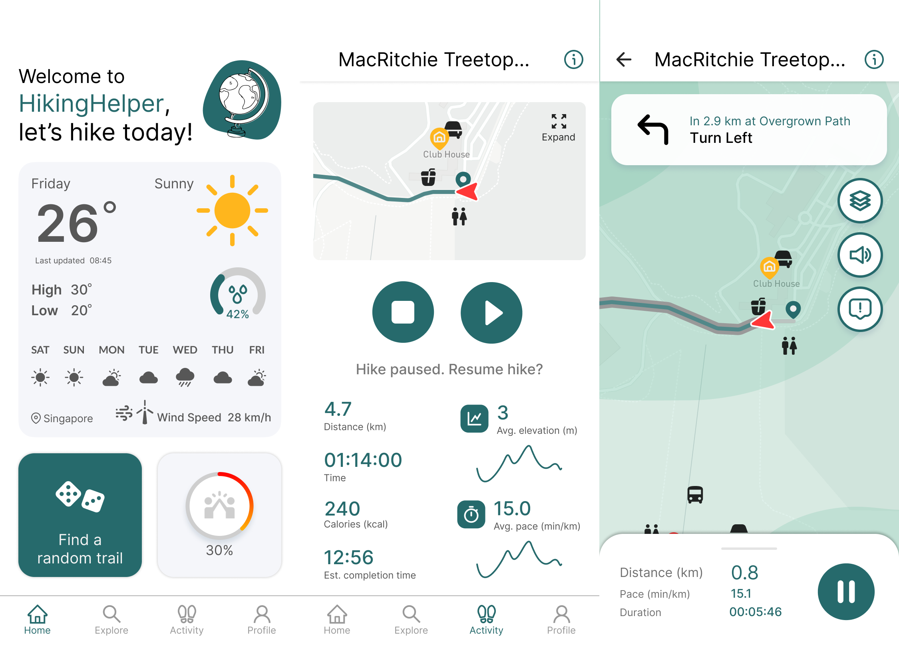
CS3240: Interaction Design [Team Project]
A high-fidelity (hi-fi) prototype of an application that users can use to discover new hiking trails in Singapore.
This prototype was developed with various User Experience (UX) research methods.
Built with Figma.
View more
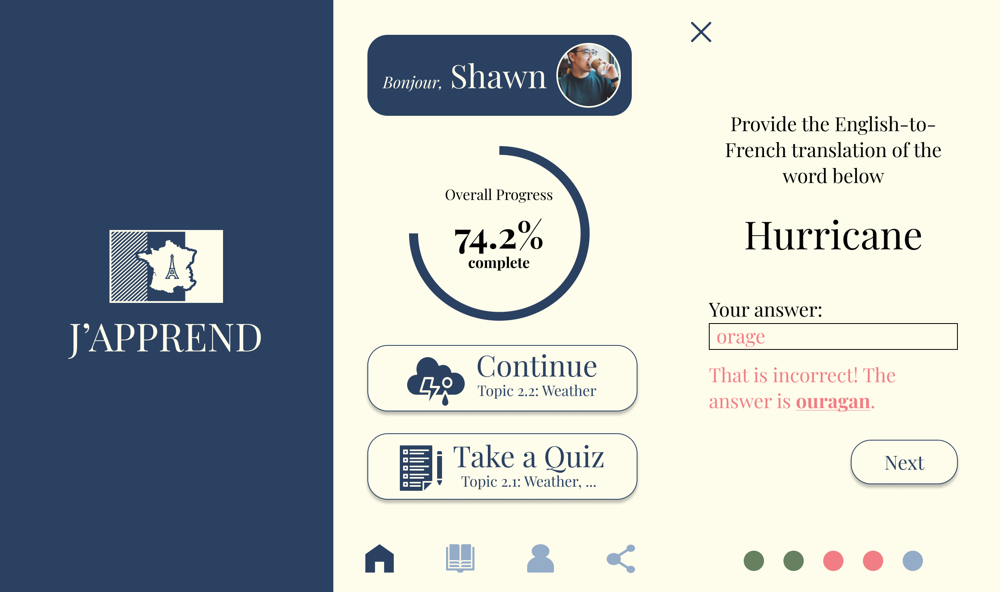
CS3240: Interaction Design [Individual Project]
A high-fidelity (hi-fi) prototype of an application that users can use to learn french.
This prototype was developed with various User Experience (UX) research methods.
Built with Figma.
View more
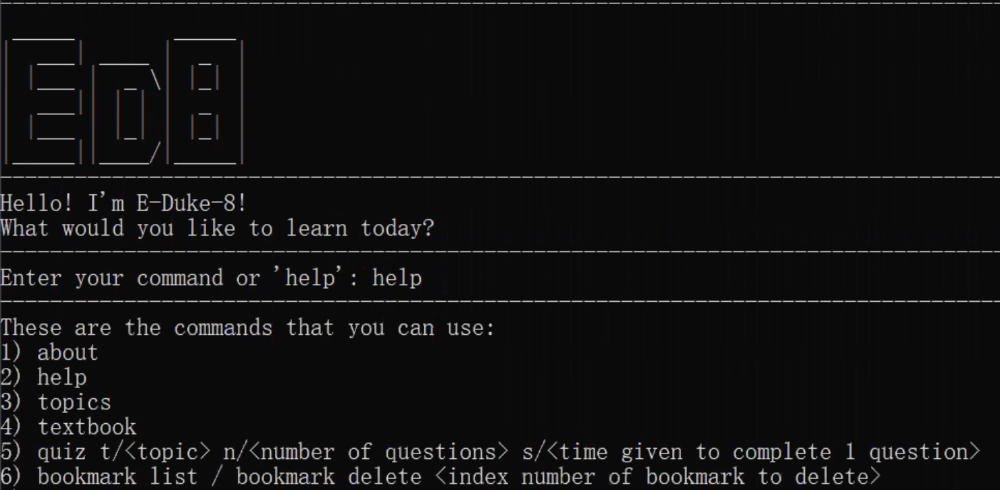
CS2113T: Software Engineering & Object-Oriented Programming
A Command Line Interface (CLI) application targeted at fellow university students, with the purpose of making
the learning of programming concepts more engaging.
Built with Java.
View more
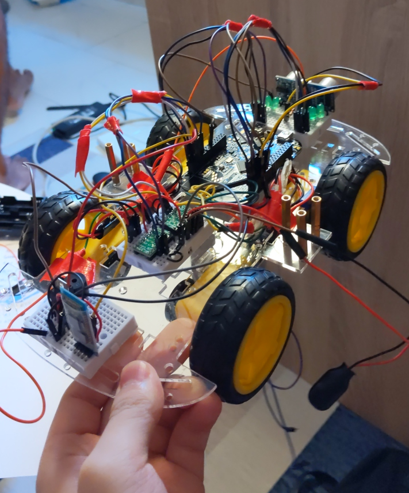
CG2271: Real-Time Operating Systems
A robotic vehicle that is able to be controlled by an Android application via a Bluetooth Low Energy (BLE)
connection. The robot has various functionalities, such as playing music and a self-driving mode.
Built with C.
View more
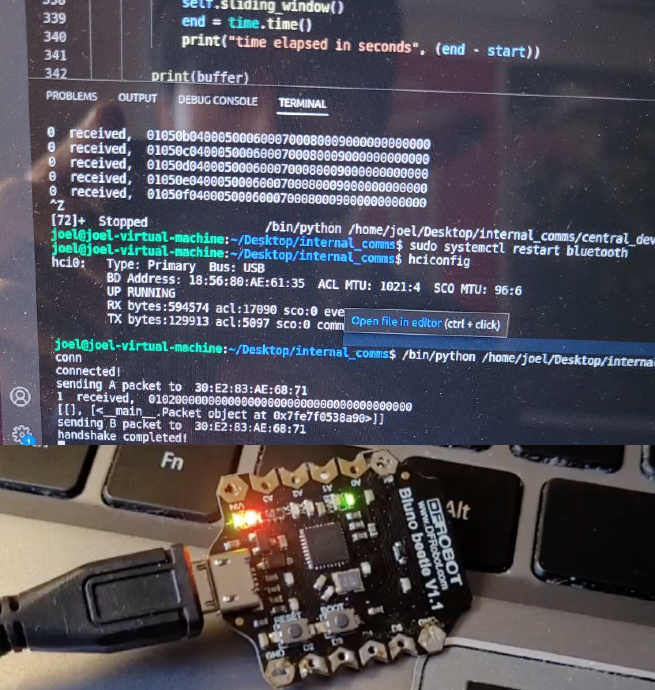
CG4002: Computer Engineering Capstone Project
A laser tag system that can support 2 players. The system involves Artificial Intelligence (to detect players'
gestures) hardware components, an application, and a Bluetooth Low Energy (BLE) connection that connects the
various parts of the system.
My part in the project (i.e., establishing and maintaining BLE connections) was completed using Python and C++.
View more
Personal Projects
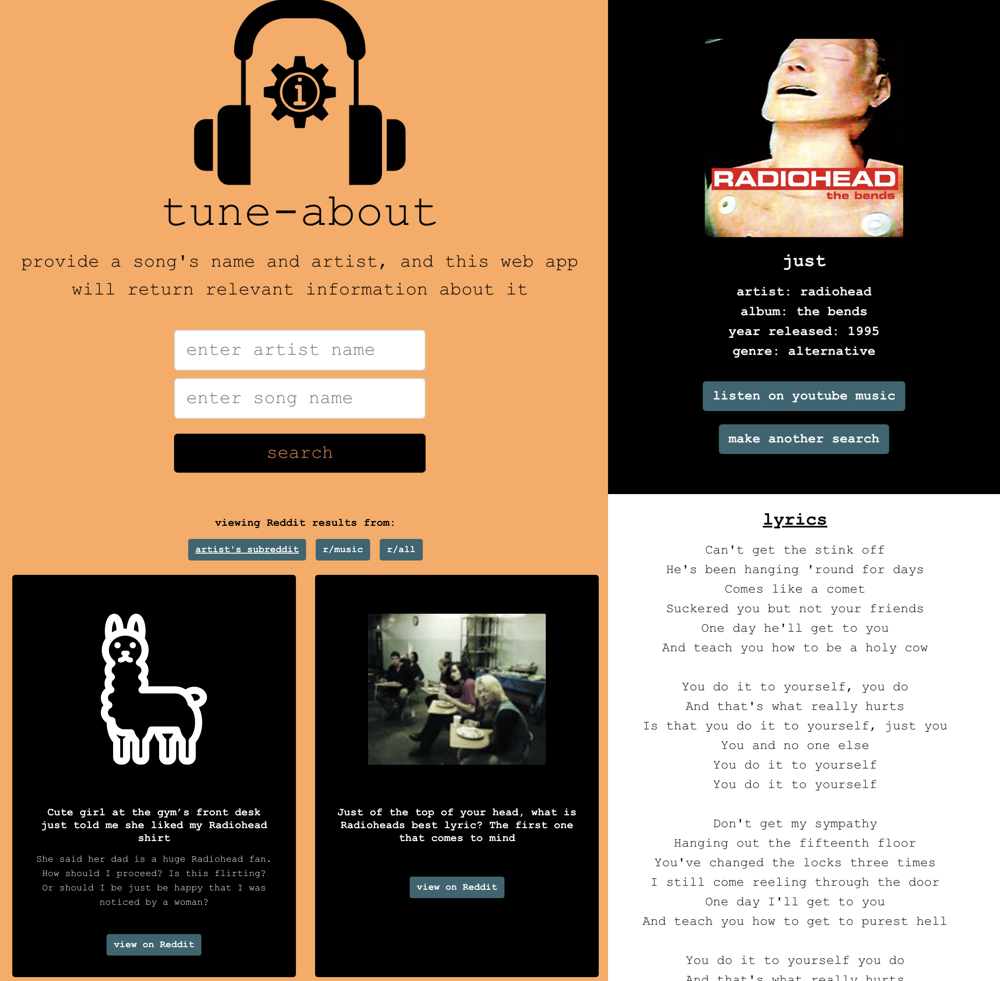
Tune About
A web application on which users can view information about a song, such as the song's lyrics,
relevant posts about the song on Reddit, and links to the song's pages on websites such as Genius.com.
Built with React JS, Bootstrap, iTunes Public Search API, and Reddit API.
View Code
View Live Site
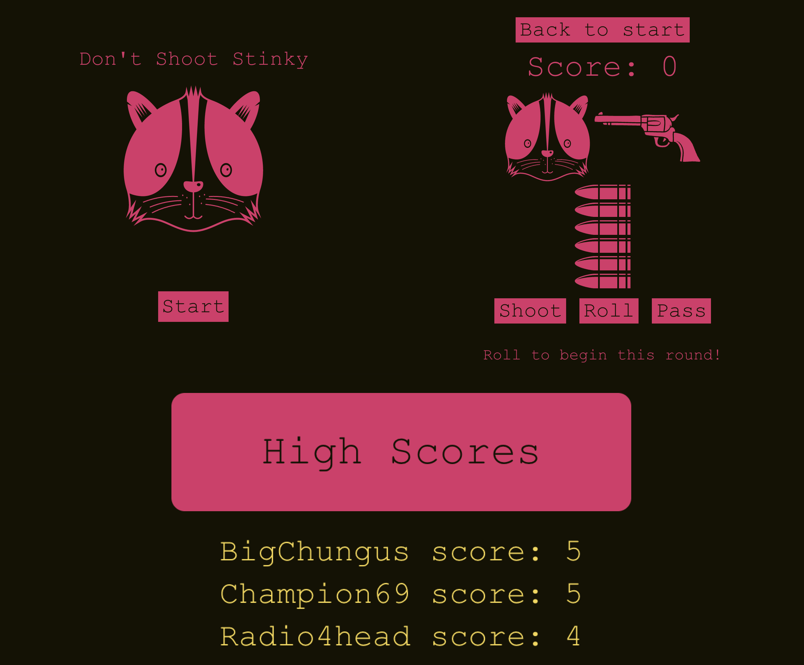
Don't Shoot Stinky
A web game based on the infamous game, Russian Roulette. Players can submit their scores, and
vie for the top positions on the scoreboard.
Built with PostgreSQL, Express, React JS, SASS, and Node JS.
View Code
View Live Site
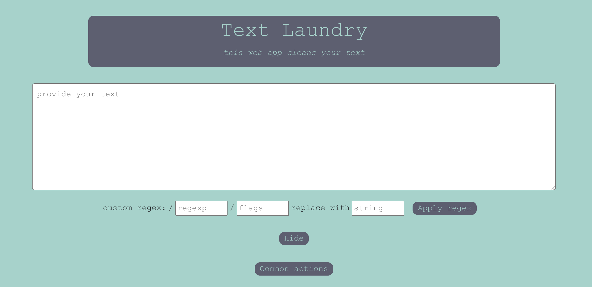
Text Laundry
A web application on which users can edit chunks of text with Regular Expressions (RegEx).
Built with React JS, Bootstrap and SASS.
View Code
View Live Site
CAP Calculator
An excel sheet that facilitates the calculation of the Cumulative Average Point (CAP)
of an undergraduate from the National University of Singapore.
Built with Microsoft Excel.
View Code
Download CAP Calculator
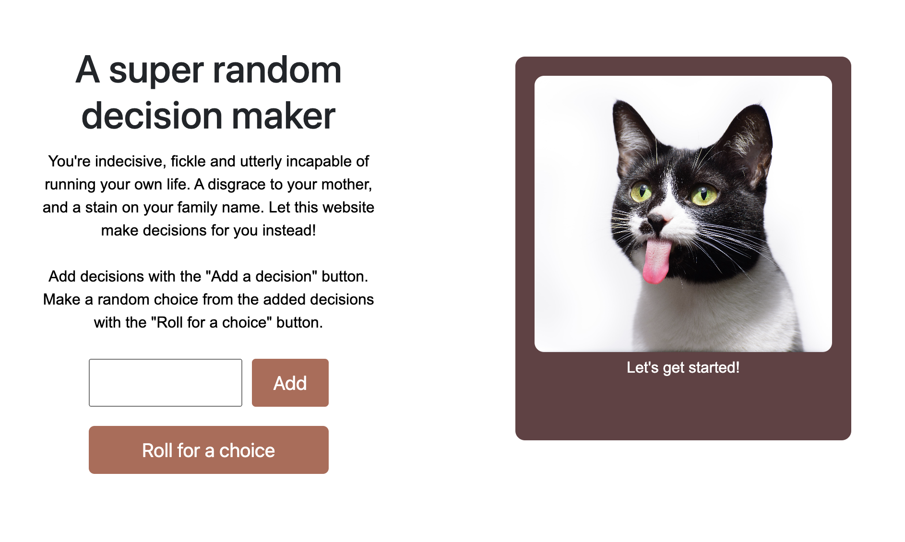
Indecisive Web App
A web application that randomly chooses choices provided by the user.
Built with HTML, CSS, Bootstrap, and JavaScript.
View Code
View Live Site
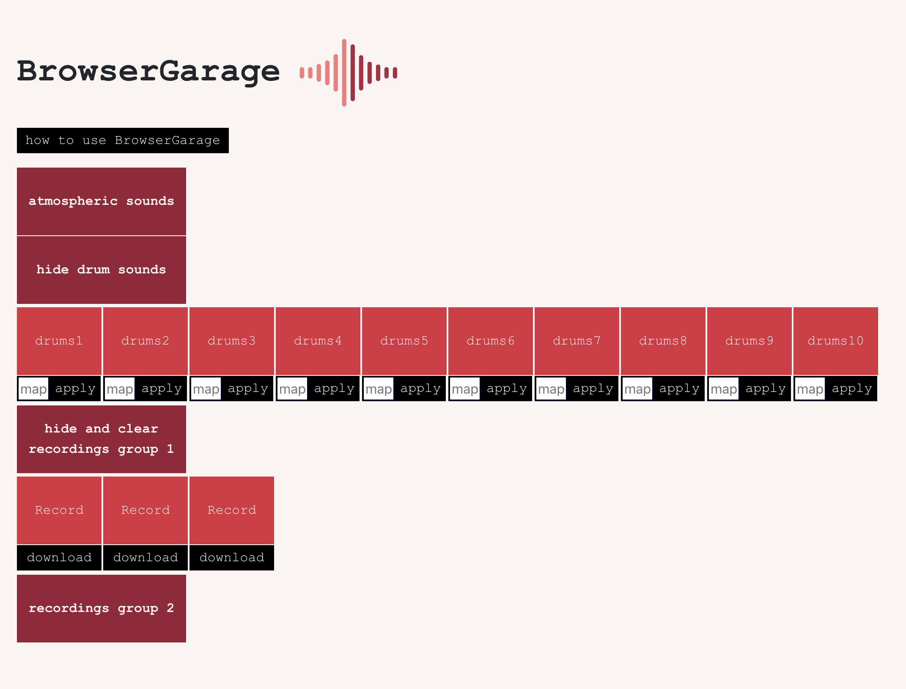
Browser Garage
A web application loosely based on the popular application Garage Band. On this web application,
users can map sounds provided to keys on their keyboard, upon which they could make and record
music.
Built with React JS, Bootstrap, and Audio Web API.
View Code
View Live Site
Co-curriculars
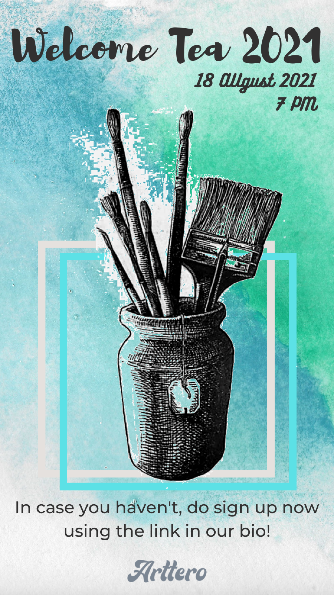
NUS Arttero: Publicity Manager (Sept 2020 - Dec 2021)
NUS Arttero is an interest group at the National University of Singapore centered around visual arts.
As a publicity manager, I manage the interest group's social media presence, among other responsibilities.
View more
My General Interest in Art
Art has been a lifelong pursuit of mine. I've had experience with many mediums, from acrylics to colour pencils,
but I am most fond of making art with pen and ink.
View more
Hello
Close
Close
My experience as a Software Developer Intern at Thales Solutions Asia
That's me in the middle.
About
At Thales, I was assigned to a team that was responsible for building the Replayer Project. This was an
ongoing project with the Land Transport Authority (LTA), to create an desktop application.
This application would be used by LTA personnel to simulate railway activity along the North-East Line (NEL).
Such simulations would be helpful for training LTA personnel in reacting to various circumstances.
Contributions
Developed the Graphical User Interface (GUI) of the application with Python Tkiner.
The GUI was based on a design provided by another department. The GUI could be used to sort and upload log files
for simulations. Users could also view the time elapsed/remaining for ongoing simulations.
Contributed code to the application's middleware with C++. This was to interpret the log files uploaded, and
run simulations accurately.
Worked with my team to provide and implemented possible solutions to simulate railway activity.
Designed a solution that would provide LTA personnel the ability to set and synchronize the date and time on
all relevant servers when a simulation is being performed. Subsequently, I presented this solution to my
colleagues and superiors.
Takeaways
Picked up Python, and was able to use my existing C++ and Linux knowledge into practice in a professional
workplace setting.
Learned about, and applied common software engineering practices, including some of the standard practices defined by the
Institute of Electical and Electronics Engineers (IEEE).
Took part in my team's Agile workflow, by using Jira (an issue-tracking tool) and participating in bi-weekly sprints.
Had experience creating presentations about my work, and enunciating problems and possible solutions to my superiors.
Close
My experience as a Web Developer Intern at Tusitala Books
About
At Tusitala Books, I developed microsites and web applications for the company's clients, based on the Figma prototypes
developed by the company's designer. Some of the company's clients include Singapore HeritageFest and Esplanade. These
projects are mostly about creating digital experiences of local literary/art works.
Contributions
Development of the Second Edition of Esplanade's Little Red Comma
Little Red Comma is a programme commissioned by Esplanade Offstage, and backed by the National Arts Council.
The programme combines Singaporean literature with digital media.
Participated heavily in the development of 3 microsites in the second edition of the Little Red Comma.
I used Front-End technologies, such as React JS, Bootstrap and SASS.
Development of other web applications and microsites
Developed and maintained the front-end of other projects, based on the client's feedback.
Such tasks required me to utilize popular JavaScript libraries such as Mapbox GL JS, Howl JS, and A-Frame.
Currently developing an Augmented Reality (AR) web application using 8th Wall.
Takeaways
Picked up many technologies used in Front-End Development, and was able to use them in a professional workplace
setting, with considerable time constraints.
Further developed communication skills. This is via opportunities to participate in the ideation process
for the company's project pitches, and updating clients regarding the progress of the company's work. In addition, I helped
man the company's booth at the Singapore Week of Innovation and Technology (SWITCH) Conference 2022, during which I explained
the company's projects to other professionals at the conference.
Some of the microsites I've worked on can be viewed via the buttons below:
Microsite 1
Microsite 2
Microsite 3
Close
QuerIt - A Localized Chatroom Application
Motivation
This application was built with a team of 2. My team member and I found that speaking up in a lecture
to clarify doubts can be rather daunting, especially if one is fairly introverted. And even if we did voice our doubts,
the act could be disruptive to our peers. We did notice that there were already various applications used by professors
in school for students to discuss and raise their doubts, such as Pigeonhole Live. However, these tools often came with
issues - most commonly, faulty links. QuerIt aims to solve this issue by allowing anyone with a mobile phone to simply enable
their GPS, and join the chatroom created by the speaker/professor/teaching assistant.
Functionalities
Users can sign in after creating an account, or anonymously, without creating an account.
Users can create a chatroom and set a distance, such that other users within this distance would be able to
join this chatroom.
Inside chatrooms, users can post threads. All users in the chatroom will be able to comment on the thread.
Users can upvote/downvote threads and comments in the chatroom they are currently in.
Users who are logged in with their accounts can archive comments for future reference.
Trying out QuerIt
Unfortunately, QuerIt only works on Android 10.0, a common version of Android when the application was developed.
However, QuerIt can still run on an Android emulator with Android 10.0, or with an Android device with
Android 10.0. Download the .apk file through the "Download QuerIt" button below, and install it on an
Android emulator/device.
View Code
Download QuerIt
Close
HikingHelper
Motivation
This high-fidelity prototype is of a hypothetical application that helps users discover, rate, and share new hiking trails
with others. The prototype was the result of a multi-step design process, with required the practice of various User Interface
/User Experience (UI/UX) principles.
Design Process
Ideation: this involved a brainstorm process that comprised of methods such as Crazy 8s (a fast sketching exercise to help
generate ideas).
User research: we identified our idea's primary and secondary
users. Based on our user identification process, we conducted user recruitment and user study. The latter involved
the use of surveys on Google Forms and interviews over video call.
Identifying user tasks: based on the findings from the user study, we came up with user scenarios and tasks, which were
then reflected in storyboards.
Low-fidelity Prototype: Balsamiq was used to quickly create Lo-Fi prototypes.
High-fidelity Prototype: Figma was used to create a hi-fi prototype, based on the best aspects of each member's Lo-Fi prototype.
User testing: user testing with the hi-fi prototype was performed by conducting heuristic evaluation (with the teaching staff),
general usability testing (using Maze), and detailed usability testing, which involved participants using the prototype and
vocalizing their thought process over a Zoom call.
Improving the Hi-Fi prototype based on feedback and findings from user testing.
Trying out HikingHelper
The Hi-Fi prototype, and a site detailing the design process can be viewed by clicking on the buttons below:
View Hi-Fi Prototype
View Design Process
Close
J'Apprend
Motivation
This prototype was developed for the module's Individual Design Exercise. This hypothetical application would help
make learning the French language more effective.
Design Process
Design considerations: based on readings provided, I identified certain methods that make learning more effective.
These methods are:
1) Adopting the harder-to-learn condition (English-to-French).
2) Adopting immediate testing (after the user has just learned something new), followed by delayed tests.
These tests should be open-ended.
3) Lessons should be short.
Detailing the user journey: by detailing each step that a typical user would take when using this application, I am
better able to identify potential issues experienced by users.
Sketching and Low-Fidelity (Lo-Fi) prototyping using Balsamiq.
High-Fidelity (Hi-Fi) prototyping using Figma: I strived to use heuristic evaluation based on
Nelson's Heuristics. Some of the heuristics I adhered to are:
1) User control and freedom - users should be able to navigate the application easily, with as few
actions as possible.
2) Match between system and the real world - the application is modelled after flash cards, and there
terms used in the application are widely used.
3) Aesthetic and minimalist design - the application has a simple colour scheme and does not have a cluttered design.
Trying out J'Apprend
The Hi-Fi prototype for J'Apprend can be viewed by clicking on the buttons below:
View Hi-Fi Prototype
Close
E-Duke-8
Pronounced 'Educate'
Motivation
This Java application was built with the intention of making the learning of programming concepts more
effective by gamifying the learning process.
Contributions
Implemented functionality to add, delete, update and list out notes that are attached particular topics.
The code was implemented using Object-Oriented Programming principles such as SOLID and SLAP.
In addition, I wrote the relevant unit tests.
Resolved some of the bugs and issues raised after our peers tested our application.
Made Unified Modelling Language (UML) and Sequential diagrams based on my team's discussions
about the application's architecture
Contributed to the application's documentation.
Trying out E-Duke-8
The code for E-Duke-8, the user guide, and the link to download the JAR file can be accessed by clicking on
the buttons below:
View Code
View User Guide
Download E-Duke-8
Close
CG2271 [Real-Time Operating Systems] Team Project
Motivation
This project required a wheeled robot, controlled by an android application via a Bluetooth Low Energy (BLE) connection,
to traverse a course arranged by the teaching staff. In addition, the robot had to have functionalities such as:
Having lights switch on and off in a particular order, according to the action being performed.
Playing a soundtrack continuously.
A self-driving mode where the robot has to navigate a small obstacle course without any intervention.
The robot was built on a FRDM-KL25Z microcontroller, with CMSIS-RTOS RTX (a Real Time Operating System
interface for Cortex-M processor-based devices) for scheduling and threading.
Contributions
Implemented a thread that was responsible for the lights on the robot. The lights had to blink in a
particular order based on the actions taken by the robot. For example, when the robot is stationary,
all lights must be lighted up, and if the robot is not stationary, the front lights must flash in a
particular order, with a specified delay.
Contributed to the code for the IRQ (Interrupt Request) Handlers. IRQ Handlers allow the robot
to respond to detected signals from the hardware components (such as Ultrasonic Sensors).
Close
CG4002 [Computer Engineering Capstone Project]
Motivation
This objective of this project is to develop a laser tag system that is playable with 2 players.
Some requirements of this project include:
Triggering actions in the game (such as throwing a grenade) through specific gestures from the user.
Maintenance and recovery of Bluetooth Low Energy connection that connects the various components
of the laser tag system.
An Augmented Reality application on mobile devices for the gameplay.
Contributions
Implemented multithreaded code that established, maintained and recovered BLE connections between
the hardware sensors (Bluno Beetles) and the computer.
Implemented code in the hardware sensors to communicate with the connected computer.
Contributed to the integration of my code with the rest of the team's code.
The code I wrote for the individual check-in milestone could be viewed through the button below. This is
the first milestone of the module, where we demonstrate our individually written code for our respective roles
to the teaching staff. The code was written according to a requirements list provided.
View Code
Close
Some of my contributions to the interest group's social media page on Instagram
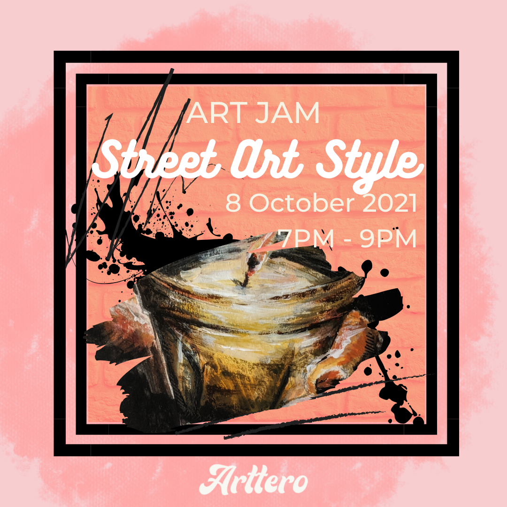
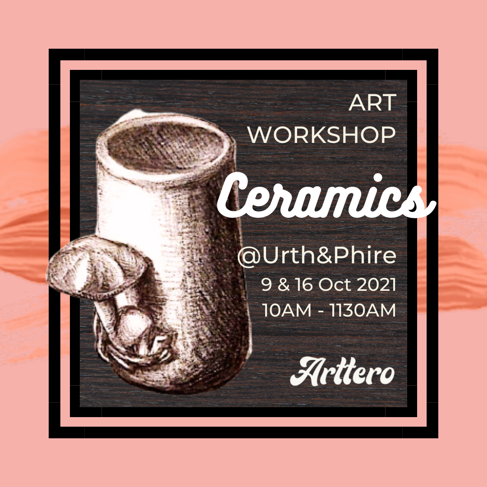
Close
Some of my illustrations
View my art on Instagram